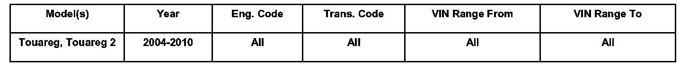
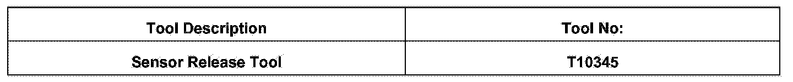

Parking Assist System - False Obstacle Warnings
9409-02
Affected Vehicles
Condition
94 09 02 March 23, 2009 2019322
Parking Aid Control, Warning Indicator Illuminated Intermittently
An intermittent condition may occur resulting in the following symptom:
- Dash panel segment display illuminates although there is no obstacle in range.
Technical Background
Parking indicator influenced by additional accessories, adverse environmental and weather influences or incorrect fit of the sensors.
NOTE: DO NOT replace Parking Aid components for intermittent conditions that do not exhibit a fault in the Parking Distance Control module. All parts replaced must have Guided Fault Finding history.
Production Solution
No production change required.
Service
Special accessories
Check/Inspect the following areas for sensor interference:
- Brush Guard
- Under body protection
- Incorrect fit of license plate (protruding into PDC range, simulating an obstacle)
There are environmental and weather influences to consider such as:
- Ice or debris on the sensor
- Strong rain or driving on flooded roads
- Strong external electro-magnetic sources such as induction loops on traffic lights or barriers
- Strong acoustic sources in the ultrasound frequency range directly around the vehicle (for example compressed air noises, road sweepers, and accelerating motorbikes)
Position and attachment of the sensor
Check/Inspect whether:
- The sensor is fitted centrally in the bumper opening
- The sensor fits firmly in the sensor holder
- The decoupling ring is correctly fitted around the sensor
- Front and rear of vehicle for indications of damage
Removal and installation
The repair procedure for removing and installing parking aid system sensors is to be strictly followed using release tool part number T10345 to avoid damaging parts. See Repair Manual Group 94 Exterior Lights and Switches, Parking Aid System in ElsaWeb before beginning repair.
Warranty
Information only.
Required Parts and Tools
No Special Parts required.

Additional Information
All part and service references provided in this Technical Bulletin are subject to change and/or removal. Always check with your Parts Dept. and Repair Manuals for the latest information.